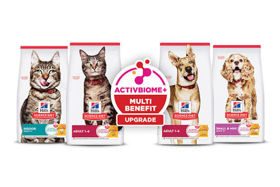
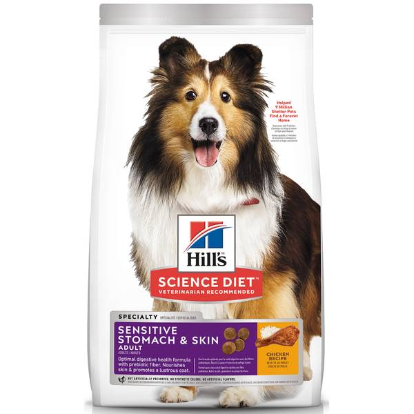
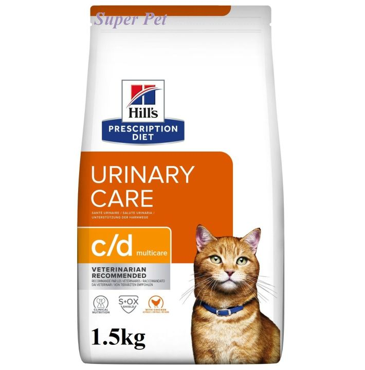

01 / Instagram postHook

Every pet has a clueStart with the question, not the product.Save this for your next feeding conversation
Role in the campaignEarn attention with a simple question before introducing product choices.
A self-directed campaign concept for a Hill’s pet-food range: using research, AI-assisted generation, structured checkpoints, and content management to shape a clear product-education story.
Mock campaign · personal project · not client workCat and dog owners looking for a clearer way to compare everyday nutrition options for their pets.
Turn a broad product range into an approachable post that helps owners start a conversation about their pet’s needs.



Self-directed practice project. Product imagery supplied for concept development; no client campaign results are claimed.
Marketing content becomes easier to manage when every idea has a target, a next step, and a review point. This is the structure Theoses is being upgraded to support across the full digital content lifecycle.
Begin with the need, not the product name.
ResearchedOne clear message, adapted into multiple formats.
In progressKeep education useful, careful, and easy to understand.
Ready to reviewUse the strongest hook as the opening question.
QueuedThis mock desk shows how a campaign can move from a question to a reviewed content asset, with every next action visible.

“Adult, small breed, sensitive stomach — which clue describes your pet?”
It starts with recognisable pet-owner clues and invites self-identification before mentioning a product.
Click on mobile to swap angle“The right pet food conversation starts before the product recommendation.”
It positions education and listening as the first step, keeping the communication useful rather than overly sales-led.
Click on mobile to swap angle“Tell us your pet’s age, size, and biggest feeding question.”
It creates a clear next action and gives the content team useful signals for the next campaign idea.
Click on mobile to swap angleTurn a broad product range into a focused audience question before creating anything.
Theoses currently supports research, content ideation, drafting, workflow structure, and digital organisation. The next development stage is to manage more of the content lifecycle, including generation, automation, scheduling, and campaign tracking. I select and edit the final direction myself.
Relevant comments, questions, replies, and recurring customer concerns.
Which hook, format, and product angle earns the clearest response.